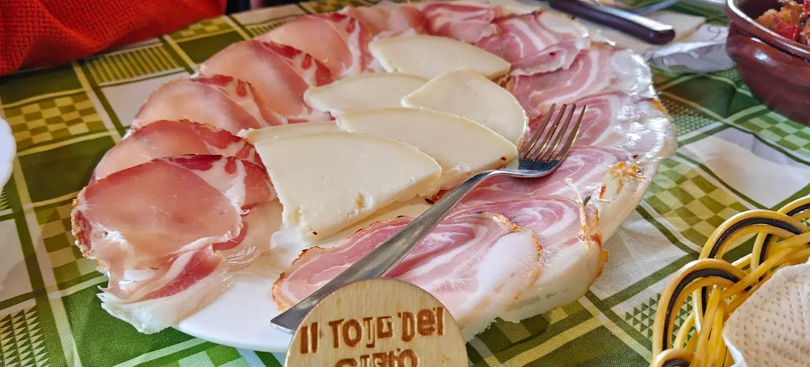
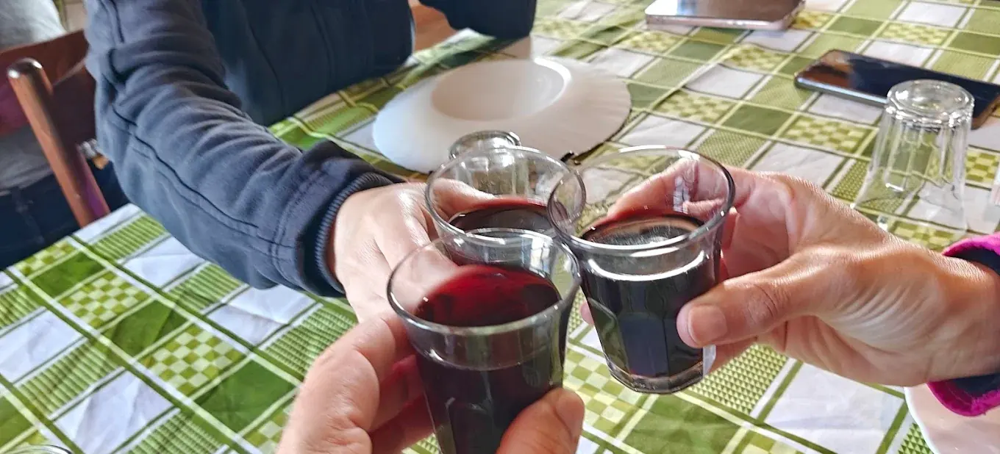
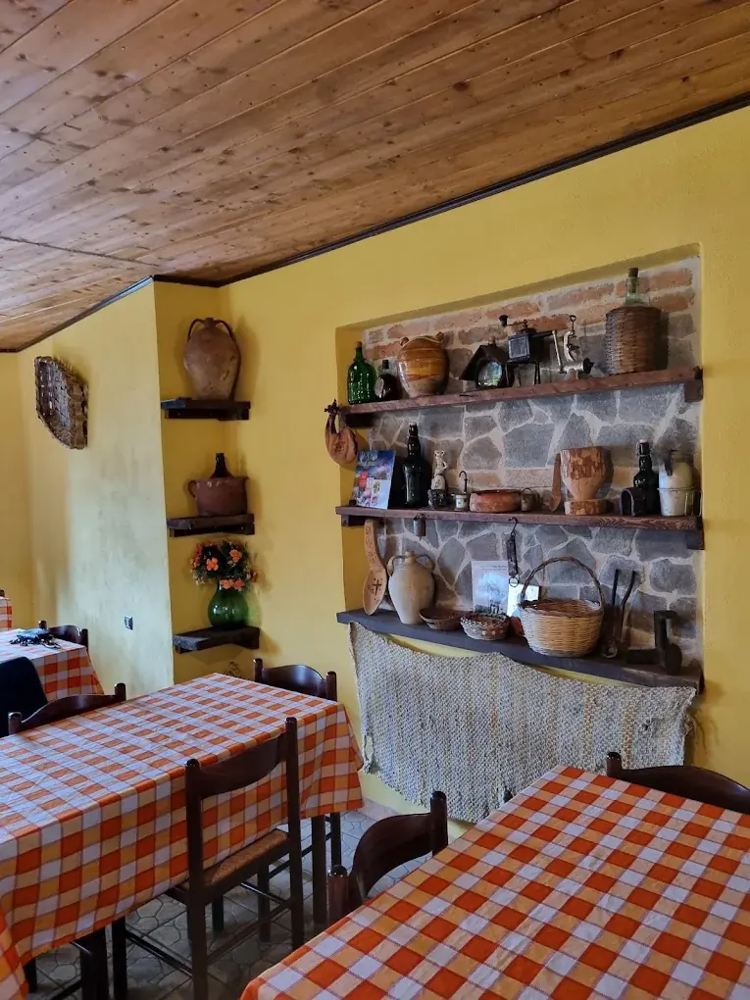
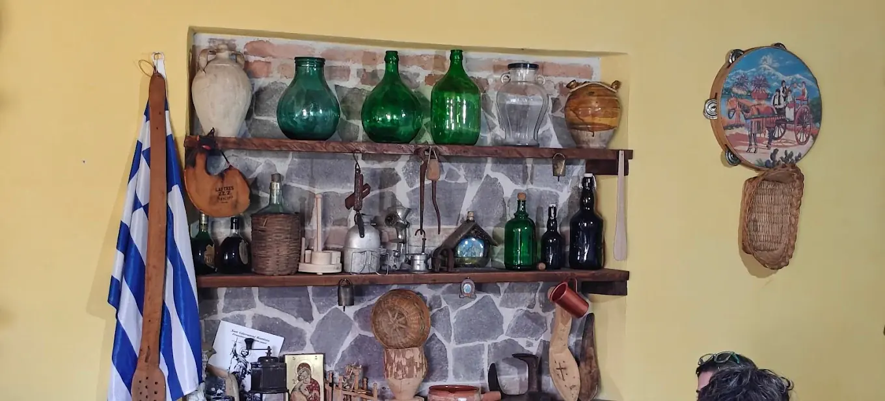

Antipasto
Salumi e formaggi locali
Un piatto da condividere, con sapori decisi e prodotti che parlano di montagna, stalle e tradizione.

Il luogo dove Gallicianò si ritrova a tavola: sala semplice, piatti di casa, vino, formaggi, salumi, pasta fatta a mano e secondi della tradizione.
Per chi alloggia nella nostra struttura il menù completo convenzionato costa 25 € invece di 30 €. Prenotazione e disponibilità vanno sempre confermate prima con la trattoria.
Prenotazione consigliata. Piatti, orari e disponibilità possono cambiare in base alla stagione e all’organizzazione del giorno.
Qui non serve scenografia finta: bastano tavoli, oggetti di memoria, tovaglie, bottiglie, pane e persone. La sala racconta esattamente quello che il turista cerca quando arriva in un borgo così: autenticità senza teatro.


Queste foto non sono decorative: servono a riconoscere il punto giusto quando sei già a Gallicianò. Prima guardi la facciata, poi il cartello vicino alla chiesa, poi l’incisione sulla pavimentazione. Sì, finalmente orientamento pratico, non caccia al tesoro con fame crescente.

Riferimento principale: l’ingresso e il cortile esterno della Trattoria Nizio Paleò.

Quando vedi il cartello sotto l’indicazione della Chiesa di San Giovanni Battista, sei nella direzione corretta.

La scritta nella pavimentazione conferma che sei arrivato nella zona giusta.
La trattoria è un riferimento locale separato da Casa Giufà. Per chi alloggia nella nostra struttura, il menù completo convenzionato costa 25 € a persona invece di 30 €. Per pranzo, cena, orari e disponibilità è sempre meglio chiamare o scrivere prima.
Puoi tornare indietro, rientrare alla Home o andare alla prossima pagina del percorso consigliato.